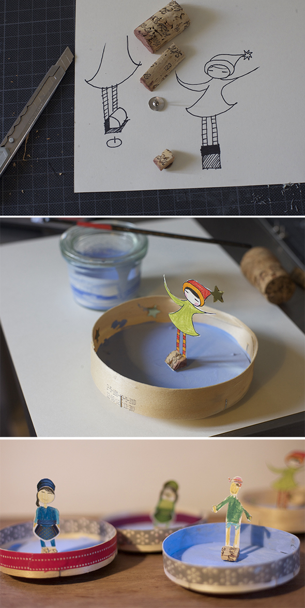

How do you make a skater figure with a magnet?
You have to paint your character on cardboard cut it out (the lower part should have a free space, see drawing below). Do not forget to paint your character on the back too. The lower part you have to glue around a piece of cork, and in the end you need to stuck a thumbtack from the bottom into the cork. For the rink we used a cheese box. We painted the ground and decorated the border with wash tape.
In the video you can see how the figure rotates when you move a magnet from below. If your character falls, you have to use a stronger magnet.
http://youtu.be/cbrOVWaX_wM
